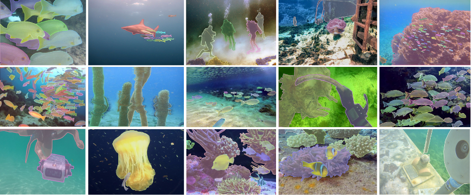
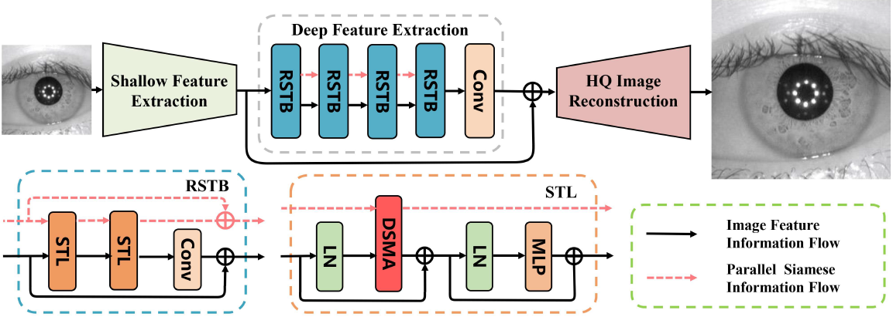

|
Shijie Lian is a Ph.D. student at the School of Computer Science & Technology, Huazhong University of Science and Technology (HUST), under the supervision of Prof. Laurence T. Yang. He graduated from Hainan University with a B.S. degree in 2024. His research interests are computer vision and multimodal learning, especially scene understanding and image segmentation. |
{kind=link}

|
ICML, 2024 

Paper | Code | Dataset (USIS10K Dataset) | BibTex We apply SAM to underwater salient instance segmentation (USIS), aiming to improve the segmentation accuracy in complex underwater scenes. We also present the largest existing USIS dataset, which has per-pixel labeling of 10,632 images. |
|

|
Shijie Lian, Hua Li, Runmin Cong, Suqi Li, Wei Zhang, Sam Kwong ICCV, 2023 

Paper | Code | Dataset (UIIS Dataset) | BibTex In this work, we present the first generalized underwater image instance segmentation dataset containing 4628 images with pixel-level annotations. |
|

|
Jin Hao, Shijie Lian, Suqi Li, Hua Li UIC, 2022 Paper | BibTex In which we propose a super resolution neural network for Iris super resolution. |
|